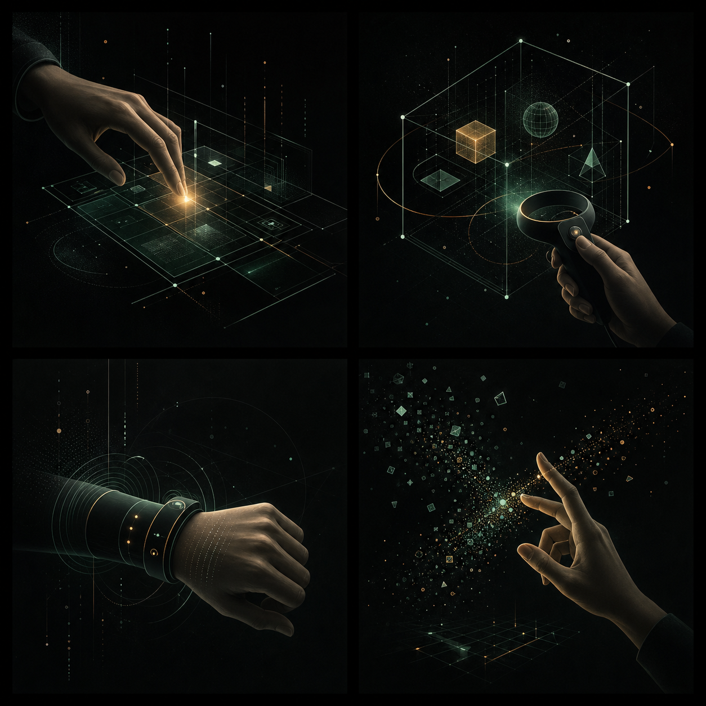

01
Human-Computer Interaction
사람과 시스템 사이의 상호작용 구조

INTERACTION ENGINEERING · HUMAN-COMPUTER INTERACTION
사람의 움직임과 디지털 시스템 사이를 설계하는 삼성전자 Staff Engineer입니다.
Human-Computer
Interaction
VR/AR · 3D Interaction
Wearable Interface
PROFILE
현재 삼성전자에서 Staff Engineer로 일하고 있습니다. 인터랙션을 단순한 입력 방식이 아니라, 기술과 사람이 만나는 경험의 구조로 바라봅니다.
AREAS OF INTEREST
사람과 시스템 사이의 상호작용 구조

몰입형 환경에서의 자연스러운 조작
몸의 움직임을 입력으로 확장하는 인터페이스
손짓과 시선, 새로운 텍스트 입력 방식
EDUCATION & HONORS
Samsung Electronics
KAIST · Human-Computer Interaction Lab
KAIST · Human-Computer Interaction Lab
KAIST
SELECTED WORKS · FULL LIST
CV에 기록된 전체 논문 목록입니다. 확인 가능한 공식 URL이 없는 항목은 별도 링크 없이 표시합니다.
KOREAN PATENT
A SMALL INTERACTION EXPERIMENT
먹이를 먹고 성장하세요.
랜덤하게 움직이는 적을 피하세요.